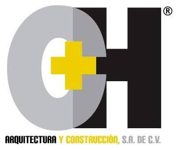

Sistema de gestión documental de obras
Un solo lugar para el expediente de cada obra: contratos, planos, permisos, estimaciones, presupuestos, bitácora, calidad, seguridad y reportes fotográficos, con control de quién ve y quién sube cada documento.
01El problema que resuelve
En una constructora la documentación de cada obra se genera en muchos lugares a la vez: la oficina prepara contratos y presupuestos, el residente toma fotos y llena la bitácora en campo, el laboratorio manda resultados y el municipio emite licencias con fecha de vencimiento. Sin un sistema, todo eso termina repartido entre correos, WhatsApp, memorias USB y carpetas compartidas.
- No se sabe cuál es la versión vigente de un plano o de una estimación.
- Una licencia o una fianza vence sin que nadie lo note.
- Armar el expediente para una entrega, una auditoría o un finiquito toma días.
- Cuando alguien deja la empresa, su información se va con su computadora.
- No queda registro de quién subió, cambió o borró algo.
02Qué hacen los sistemas de este tipo
Revisamos cómo resuelven la gestión documental las plataformas que se usan en la industria de la construcción (por ejemplo Procore, Autodesk Construction Cloud, Oracle Aconex y Fieldwire) y el concepto de entorno común de datos que propone la norma ISO 19650. Todas coinciden en siete prácticas:
| Práctica | Qué significa | Cómo la aplicamos |
|---|---|---|
| Expediente por proyecto | Cada obra tiene la misma estructura de carpetas. | 9 carpetas estándar que se crean solas con cada obra. |
| Control de versiones | Un documento conserva su historial; siempre se sabe cuál es la vigente. | “Nueva versión” guarda la anterior en el historial. |
| Estados de revisión | Lo que está en borrador no se confunde con lo aprobado. ISO 19650 usa “en proceso → compartido → publicado → archivado”. | Borrador → En revisión → Aprobado → Obsoleto. |
| Permisos por obra y por rol | Cada persona ve sólo lo que necesita. | 4 roles y asignación de personal a cada obra. |
| Metadatos y búsqueda | Encontrar documentos por nombre, etiqueta u obra, no sólo navegando carpetas. | Etiquetas y buscador sin distinguir acentos ni mayúsculas. |
| Captura en campo | Fotos y reportes subidos desde el celular, en la obra. | Reportes fotográficos con pie de foto e impresión a PDF. |
| Trazabilidad | Registro de quién hizo qué y cuándo. | Bitácora de actividad del sistema. |
Contexto en México
La estructura de carpetas sigue cómo se integra un expediente de obra en México: contrato y fianzas, estimaciones con sus números generadores, bitácora de obra, pruebas de laboratorio, programa de seguridad (la norma de referencia es la NOM-031-STPS-2011 para construcción) y actas de entrega-recepción y finiquito. Si la empresa participa en obra pública, ese expediente es además el que se revisa en una auditoría. La bitácora oficial de obra pública federal se lleva en el sistema del gobierno (BESOP); aquí se guardaría una copia como parte del expediente.
03Qué incluye el sistema
El administrador da de alta al personal, asigna su rol y las obras a las que tiene acceso. Puede desactivar a alguien sin borrar su historial.
Alta de obras con clave, cliente, ubicación, residente, fechas, monto de contrato y avance. Filtros por estado.
9 carpetas por obra. Subida de varios archivos a la vez, estados de revisión, etiquetas, historial de versiones.
Presupuesto contratado, adicionales y extraordinarios con folio, monto, estado y archivo. Totales aprobados y en trámite.
El residente sube fotos desde el celular con su pie de foto. El reporte sale listo para imprimir o guardar en PDF con firmas.
Licencias, fianzas, permisos y constancias con fecha de vencimiento. Avisos en el inicio de lo vencido y lo que vence en 30 días.
Un buscador que revisa obras, documentos, etiquetas, presupuestos y pies de foto.
Registro de cada subida, cambio de estado y eliminación: quién, qué y cuándo.
Expediente estándar de cada obra
| Carpeta | Contenido típico |
|---|---|
| Contrato y legal | Contrato, fianzas, convenios modificatorios, actas. |
| Proyecto y planos | Planos arquitectónicos y estructurales, memorias de cálculo, especificaciones. |
| Permisos y licencias | Licencia de construcción, uso de suelo, impacto ambiental, protección civil. |
| Estimaciones y generadores | Estimaciones de obra, números generadores, croquis. |
| Bitácora de obra | Notas de bitácora, instrucciones de supervisión, órdenes de cambio. |
| Calidad y laboratorio | Pruebas de concreto y compactación, certificados de materiales. |
| Seguridad e higiene | Programa de seguridad, constancias DC-3, permisos de trabajo. |
| Informes y minutas | Informes de avance, minutas, correspondencia. |
| Entrega y cierre | Acta de entrega-recepción, finiquito, planos as-built, garantías. |
Esta lista es una propuesta inicial. Conviene revisarla con los ingenieros: si ustedes ya usan otra forma de organizar el expediente, se ajusta antes de construir la versión real.
04Roles y permisos
| Permiso | Administrador | Coordinador | Residente | Consulta |
|---|---|---|---|---|
| Ver obras | Todas | Todas | Asignadas | Asignadas |
| Crear y editar obras | ✓ | ✓ | — | — |
| Subir documentos, presupuestos y reportes | ✓ | ✓ | ✓ | — |
| Aprobar o marcar como obsoleto | ✓ | ✓ | — | — |
| Eliminar documentos | ✓ | ✓ | — | — |
| Ver la actividad de todo el sistema | ✓ | ✓ | — | — |
| Gestionar usuarios y asignaciones | ✓ | — | — | — |
El rol Consulta sirve para administración, compras o un cliente que sólo necesita revisar. Cuando un residente sube una nueva versión, el documento regresa a “En revisión” hasta que un coordinador lo apruebe.
05El demo y la versión real
El demo publicado sirve para probar el flujo con datos de ejemplo antes de invertir en la versión definitiva. Todas las pantallas funcionan: se pueden crear obras, subir archivos reales, hacer reportes con fotos, cambiar de usuario y ver cómo cambian los permisos.
| Aspecto | Demo (hoy) | Versión real |
|---|---|---|
| Dónde se guardan los datos | En el navegador de quien lo usa. Cada persona ve su propia copia. | Base de datos MySQL en el servidor, compartida por todos. |
| Archivos | En el navegador; se pierden si se borra el historial. | En el servidor, fuera de la carpeta pública, con respaldo. |
| Contraseñas | De ejemplo, visibles. | Cifradas (hash), con cambio y recuperación por correo. |
| Descargas | Directas. | El servidor revisa el permiso antes de entregar cada archivo. |
| Alertas de vencimiento | Sólo en pantalla. | También por correo, con días de anticipación configurables. |
| Reporte fotográfico | Se imprime desde el navegador. | PDF generado en el servidor con formato fijo. |
06Cómo se construye la versión real
Se propone PHP 8 + MySQL: es la combinación que el hosting contratado (Hostinger) ya ofrece sin costo adicional, está muy probada y es fácil de mantener y de respaldar.
- Base de datos exclusiva para el sistema de CH Arquitectura y Construcción.
- Archivos fuera del acceso público: nadie puede descargar un documento adivinando su dirección; cada descarga pasa por PHP, que revisa la sesión y los permisos.
- Tablas principales:
usuarios,obras,usuario_obra,documentos,documento_versiones,presupuestos,reportes,reporte_fotos,actividad. El demo ya usa esta misma estructura. - Fotos reducidas al subirlas (como en el demo), para que no llenen el disco.
- PDF de reportes con la librería dompdf y correos con PHPMailer, dos librerías libres y muy usadas en PHP.
- Respaldos programados de la base de datos y de los archivos.
Punto a vigilar: el espacio en disco. Planos, PDF escaneados y fotos crecen rápido. Hay que revisar cuánto espacio tiene el plan de Hostinger y, si hace falta, guardar los archivos en un almacenamiento externo más barato (por ejemplo, un bucket compatible con S3).
07Plan por etapas
Validar pantallas, carpetas, roles y flujo con los ingenieros. Anotar qué sobra y qué falta.
Base de datos, inicio de sesión seguro, administración de usuarios, alta de obras, subida y descarga de documentos con versiones y estados, bitácora de actividad. Con esto ya se puede trabajar.
Presupuestos con archivo, reportes fotográficos con PDF, avisos de vencimiento por correo y buscador.
Instalar el sistema como aplicación en el celular (PWA), fotos con fecha y ubicación, enlaces de solo lectura para compartir un documento con el cliente o la supervisión.
Cada etapa se publica y se prueba antes de pasar a la siguiente.
08Decisiones pendientes
- Carpetas: ¿la lista de 9 carpetas refleja cómo trabajan, o hay que agregar, quitar o renombrar alguna?
- Roles: ¿son suficientes los 4 roles? Por ejemplo, ¿hace falta un rol para el cliente o para la supervisión externa?
- Aprobación: ¿quién aprueba los documentos en la práctica: el coordinador, la dirección, o depende del tipo?
- Presupuestos: ¿basta con guardar el archivo (Excel, Opus, PDF) y sus datos principales, o necesitan capturar partidas y conceptos dentro del sistema?
- Volumen: ¿cuántas obras al año y cuántas personas van a usarlo? Sirve para calcular espacio en disco.
- Base de datos: hay que crear una base MySQL nueva en el panel de Hostinger para CH Arquitectura y Construcción.
- Información existente: ¿hay documentos de obras actuales que habría que migrar al arrancar?